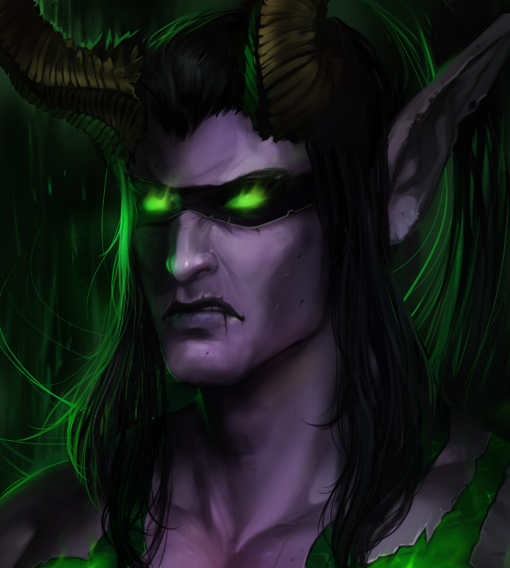
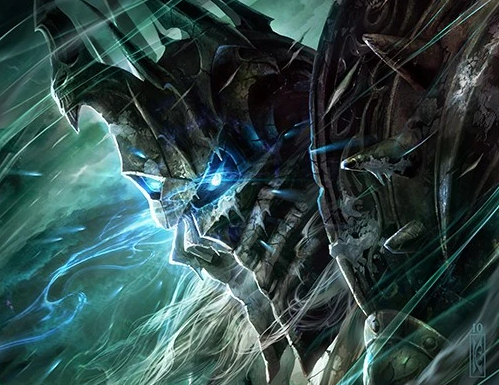

Descrição: O primeiro Caçador de Demônios, conhecido como o Traidor. Ele consumiu as energias da Caveira de Gul'dan para obter poder.
Habilidades: Metamorfose, Queimar Mana, Evasão
Classe: Caçador de Demônios
Experiência Atual: 0 XP
1. Qual é a corporação vilã em Resident Evil?
Tricell2. Em World of Warcraft, quem é o Rei Lich?
Arthas Menethil3. Qual é a casa de Harry Potter?
SonserinaLeon (RE)

Arthas (WoW)
Harry (HP)